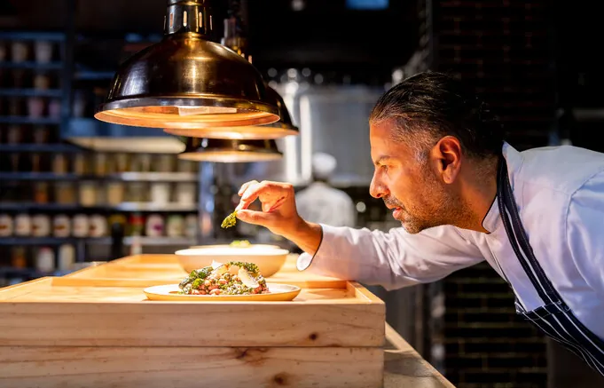

Main Dishes
Koshari
Egypt's iconic bowl of rice, lentils and pasta with three bold sauces.
36 recipes with ingredient checklists and clear methods. Tick things off as you cook, and the page remembers where you stopped.

Main Dishes
Egypt's iconic bowl of rice, lentils and pasta with three bold sauces.

Main Dishes
Crispy-edged smash burgers with special sauce and soubise onions.

Desserts
Crisp shredded-pastry kunafa soaked in sweet syrup.

Main Dishes
Crunchy and soft tacos with beef, pico de gallo and fresh guacamole.

Desserts
Classic baked cheesecake with a buttery crumb crust.

Main Dishes
Homemade sushi rice and rolls, step by step.
Search by name, or by an ingredient you already have in the kitchen.
Tick what you have gathered. The bar at the top shows how much is left.
Mark each step done and the next one lights up. Your progress is saved in this browser, and Cook mode makes the text bigger and keeps your screen on.
There isn’t a single known individual who was the “first cook” in history. The concept of cooking emerged with early human ancestors like Homo erectus, who learned to control and use fire for food preparation as far back as 1.5 million years ago. The role of a professional cook or chef developed much later, with the earliest named figures like Mithaecus in the 5th century BCE, and later figures like Marie-Antoine Carême becoming known for professional culinary expertise.

Humans have been cooking for over a million years, and the oldest recipes date back to 1700 BC, found on Mesopotamian clay tablets. Cooking can prevent foodborne illnesses but also poses dangers, with smoke from cooking fires causing many deaths annually. Cooking can also be a therapeutic activity, enhancing mindfulness, and the culinary arts have evolved significantly, with innovations from ancient cookware to modern electric stoves.